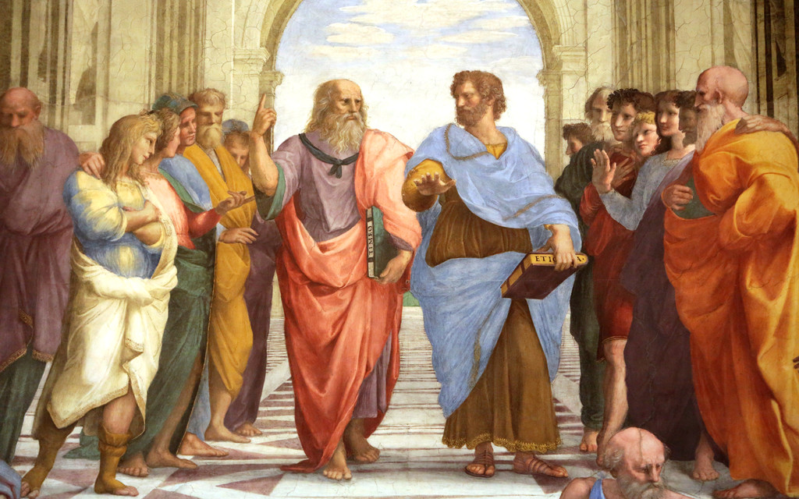
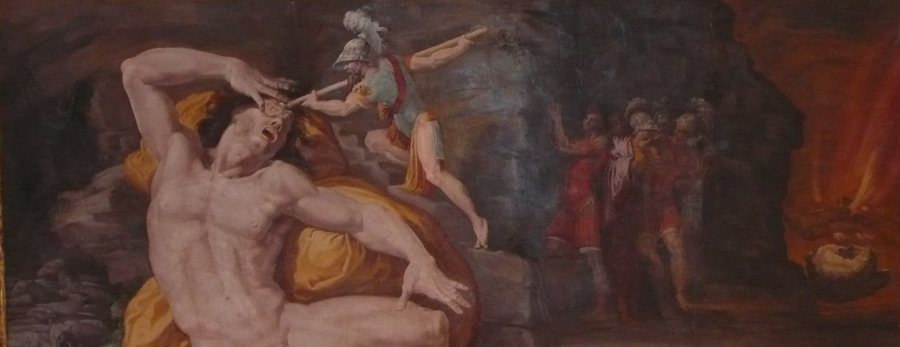
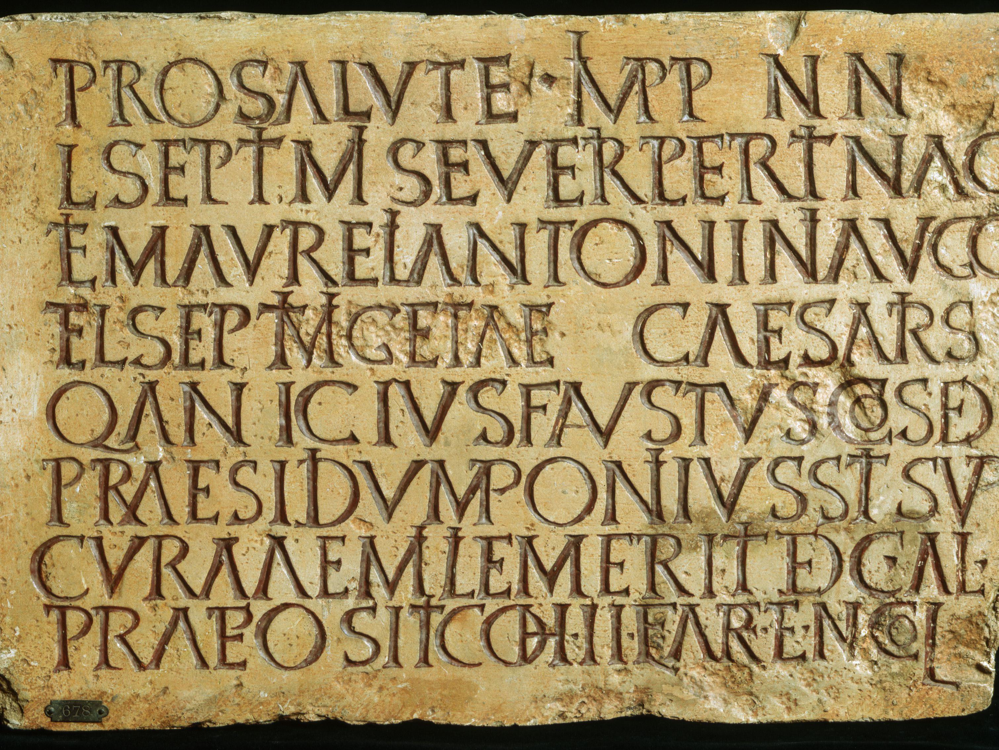
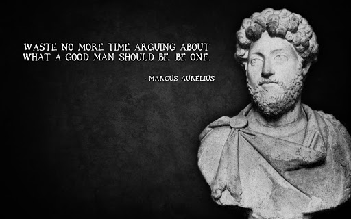

Omega University
Omega University

Bachelor of Arts in Philosophy
Are you looking to study the philosophies of the ancient Greco-Roman world? 
The Bachelor of Arts in Philosophy will prepare you for an exciting future seeking the meaning of life, the universe and everything.
Our curriculum focuses on the classical study of philosophy from the ancient Athenians to Romans. You will delve deeply into the socratic dialogues and their effects on later philosophers.
Some of the courses you can expect to take:
- PHI-114: The Socratic Method
- PHI-211: Introduction to Metaphysics
- PHI-214: Natural Philosophy
- PHI-330: Stoicism Through the Ages
Career Outlook
Philosophy is not typically the most well compensated of academic disciplines. But what it lacks in pay, it makes up for in stimulating conversation and mental agility.
Our prestigious program does rank as one of the top in the nation, and our students do benefit from this rigourous curriculum.
Over 90% of our students find work or ongoing education within six months of program completion. Nearly 80% of those students decide to continue their education pursuing either a masters degree or attending law school.
Bachelor of Arts in Classic Literature
Big fan of Homer? So are we! 
The Bachelor of Arts in Classic Literature delves deeply into the stories of the ancient Greeks and Romans. You will sift through ancient texts to see how the values contained in these stories has affected our society through the ages.
Our curriculum focuses on the literary pieces of the classical era. You will also be expected to find the cultural values and longterm effects of these stories on both ancient and contemporary societies.
Some of the courses you can expect to take:
- LIT-121: Homeric Epics
- LIT-219: Greek Theater - Comedies
- LIT-222: Greek Theater - Tragedies
- LIT-321: Aeneid
Career Outlook
Classic Literature is an important discipline that allows us to better understand our society and its growth through the ages. However, it is a discpline that is better suited to those with adacemic ambitions.
Our students benefit from the majority of the classes being taught in their original Greek and Latin. This subtle distinction gives them a leg up on their peers while seeking future opportunities for scholarship.
Only about 80% of our students find work or ongoing education within six months of completing the Classic Literature program. Almost 95% of those students decide to pursue advanced degrees, including both masters and PhD programs. Many of our former students can be found teaching at prestigious universities throughout the world, including our very own program.
Bachelor of Arts in Linguistics
Veni, vedi, vici? Are you sure you're pronouncing that correctly? 
The Bachelor of Arts in Linguistics prepares you for the study of language primarily through the lens of ancient languages. In particular, our professors are some of the foremost experts in the study of Ancient Greek and Latin.
Our curriculum focuses on teaching the six pillars of liguistic study:
- Phonetics
- Phonology
- Morphology
- Syntax
- Semantics
- Pragmatics
The department focuses on the study of ancient languages, particularly Greek and Latin, in order to continue academic investigation of the topics. However, the techniques taught are universal and should prepare the student for the ongoing study of any language.
Some of the courses you can expect to take:
- LING-111 & LING-112: Latin I and Latin II
- LING-121 & LING-122: Greek I and Greek II
- LING-230: Phonetics & Phonology
- LING-240: Morphology, Syntax and Semantics
Career Outlook
Linguistics and it's study have been around for generations. The formalization of language is an important step in developing a greater understanding of human communication.
Linguistics majors have many opportunities out in the working world as academics, researchers, translators and speech pathologists. With future developments in artificial intelligence programs, we only imagine the need for this discipline to continue growing in future years.
Around 90% of our students are employed or enrolled in continuing education within 6 months from graduation. At only 60% pursuing continuing education, this discpline tends to be one of our most applied educational programs in various industrial pursuits.
Master of Arts in Philosophy
Didn't get enough, did you? 
The Master of Arts in Philosophy delves deeper into the the philosophies of the ancient world with a greater emphasis on the translation to modern day.
Prospective students should have a strong understanding of the Socratic Method and a general understanding of other classic disciplines, such as stoicism and natural philosophy.
Some of the courses you can expect to take:
- PHI-411: Advanced Metaphysics
- PHI-430: Advanced Stoicism
- PHI-520: Epistemology
- PHI-521: Metaethics
Career Outlook
Philosophy helps teach the critical thinking and self awareness skills needed for many roles in society. Many of our students seek continuing education and opt for PhD programs after completion.
Our master degree programs have a required teaching assistant component, so our students are well prepared for future careers in education and academia. 90% of students have found work within 6 months of completion. Many of which have ended up in prestigious research and teaching positions.
Master of Arts in Ancient History
"Those who cannot remember the past are condemned to repeat it." - George Santayana
The Master of Arts in History takes a deep look at the events of antiquity. Students are expected to draw parallels with contemporary events in order to understand how we got here and what we as a society can do to improve for the future.
Prospective students should have a strong understanding of ancient Greek and Latin as many primary documents will be read in their original languages.
Some of the courses you can expect to take:
- HIST-401: Peloponnesian War
- HIST-420: Alexander The Great's Effect on Contemporary Societies
- HIST-511: Athenian Democracy and Society
- PHI-521: Carthage - Through the Ages
Career Outlook
Historians make great leaders and academics thanks to their ability to understand the consequences of past actions. Many of our students have found their way in future work as lawyers, politicians, professors and historians.
Our master degree programs have a required teaching assistant component, so our students are well prepared for future careers in education and academia. 92% of students have found work within 6 months of completion. Many of our history majors have found lucrative work as politicians and advisors in the public sector.